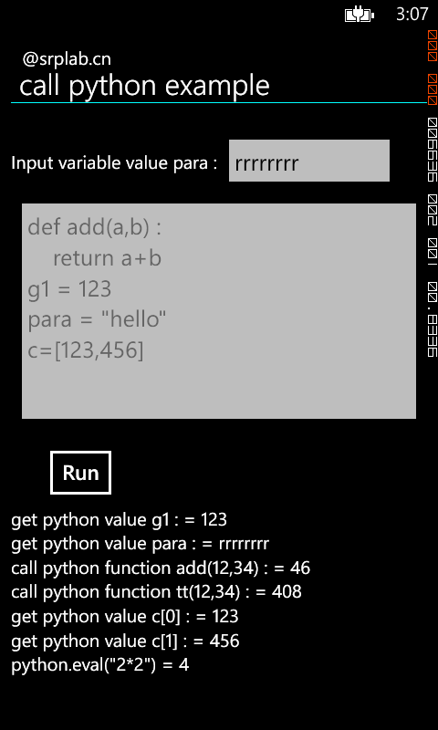

This example shows how to use python in C # based on the libraries or middleware of starcore.
Python(www.python.org) is a popular script language which can be run on multiple platforms. It is written with native c code and has been compiled for windows phone 8 by srplab( please refer to project: http://code.google.com/p/c-python-for-windows-phone8 for more details). Starcore middleware presents a two bridge between c# and python, which gives developers a choice to use python script language on wp8. This example shows how to use python in c# based on the support of starcore middleware.
Call python on wp8 is simple, it only needs four steps:
1. add reference libstarcore and star_csharp45 into the project.
2. using the following code to init starcore
StarCoreFactoryInit.Init();
StarCoreFactory starcore = StarCoreFactory.GetFactory();
StarServiceClass Service = (StarServiceClass)starcore._InitSimple("test", "123", 0, 0, null);
StarSrvGroupClass SrvGroup = (StarSrvGroupClass)Service._Get("_ServiceGroup");
SrvGroup._InitRaw("python", Service);
StarCoreFactoryInit.Init(); StarCoreFactory starcore = StarCoreFactory.GetFactory(); StarServiceClass Service = (StarServiceClass)starcore._InitSimple("test", "123", 0, 0, null); StarSrvGroupClass SrvGroup = (StarSrvGroupClass)Service._Get("_ServiceGroup"); SrvGroup._InitRaw("python", Service);
using the following code to get python global object.
dynamic python = Service._ImportRawContext("python", "", false, "");
dynamic python = Service._ImportRawContext("python", "", false, "");
using function “executefile” or “execute” to load a python file or execute python string.
The input of executefile function is a file name with full path.
The input of execute function is a python code segment to be run.
After get python global object, python variables can be get or set and python functions can be called via the python global object.
The return value may be int, bool, string, object, based on the variable value of python space. The starcore middleware is responsible for translating from one language to another.
Conclusion
Python can be used with c# on windows phone 8.
Source Code Files
python27.lib is get from http://code.google.com/p/c-python-for-windows-phone8. Please check its updates and uses latest version.
